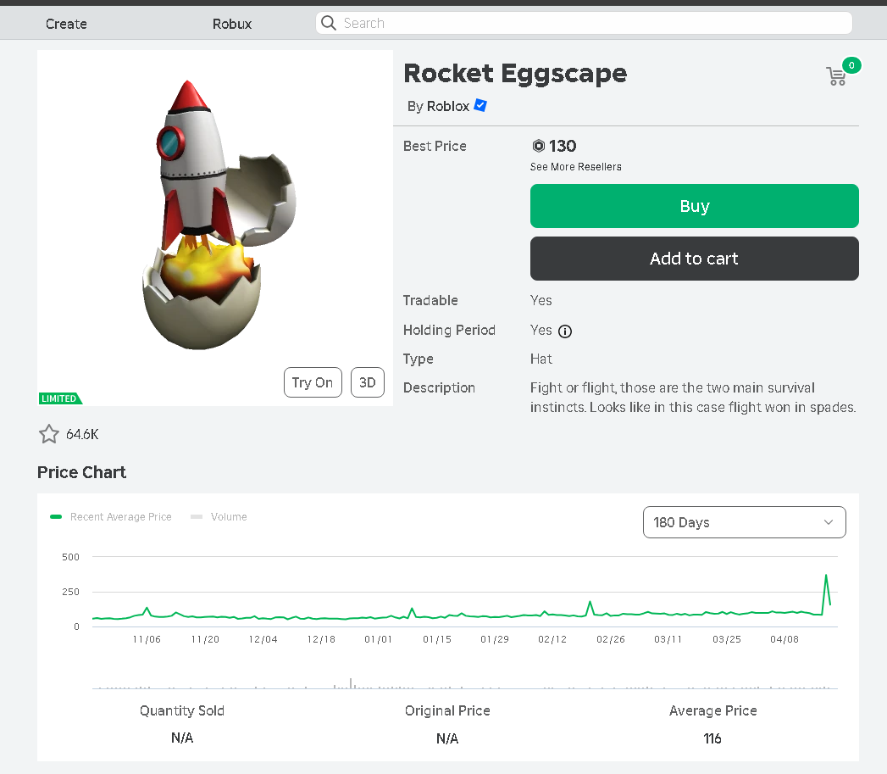

![[Image of code output along with rolimons website]](../images/rolimonsapi.png)
About:
Originally I created this project because I wanted to attempt to make some sort of bot that would automatically buy roblox limiteds when they had an available price as a sort of challenge- but it was incomplete since I never found the right api details for making the purchase (I didn't have enough spending money to test that).
How it works:
It first accesses the roblox player character by the cookie (which is stored in a dotenv file by the user) and then gathers the players current balance while also creating some other variables- like perhaps the maximum amount to spend for an item. / It then goes to the rolimons api and gathers info from from their updating feature (My program doesn't really look at on startup but instead it looks at the changes that rolimons automatically sends clients). / The info is broken down and for good deals, it verifies further information from the roblox api. / Didn't get this far but if the information was valid then the details would have been used to make the purchase.
Flaws:
It doesn't make any purchases and if it did, the way it determines what is a 'good dea' is very bad as it would only look for whatever is in price range- which wouldn't be a problem at first by my abysmally low balance- but if it had lots of funds it would start losing quickly instead.
Learned:
This project taught me a lot about the requirements in sending and receiving from APIs and the way different sites handle them differently (Rolimons was much easier to work with than Roblox). While the project is incomplete I feel much more confident in being able to make some sort of automation bot as well.
Used:
- Python
- Pycharm
- Roblox API
- Rolimons API